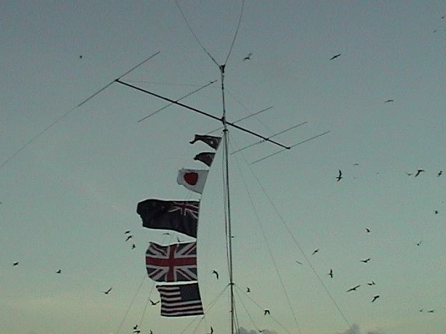

|
Flash ! DX
|
|
Flash ! DX
|
[Back Issues May.2002]
TIME:UTC(JST-09:00)
Report from JA1RJU (PM95sq)
31.May.2002(15:00e)
*BY-TV 00:00- 49.750 --
DS17CCU/1 01:36 50.110 CW
DS17AMO 01:50 50.120 SSB
HL17LTC 02:04 50.135 SSB
DS5JQK 02:09 50.175 SSB/CW
(KH0/JH1QXP 08:41 50.150 SSB JA8)
30.May.2002(15:00d)
*BY-TV 00:00- 49.750 --
29.May.2002(15:00c)
*BY-TV 03:00- 49.750 --
28.May.2002(15:00d)
*BY-TV 00:00- 49.750 --
*VK-TV 07:00- 46.172 --
27.May.2002(15:00d)
*BY-TV 00:00- 49.750 --
|
◎ 昨日入感したNorth Korea(北朝鮮)のP5/4L4FN(OP＝Ed)のオープンで、各方面から新たな情報が寄せられている。
昨日のQSOのきっかけは、06:00z頃に50.203MHzでCQを出していた群馬県安中市移動のJJ2GAZ/1・松山さんをP5/4L4FNが呼んできてQSO(06:04z)したものだが、
これが初QSOだったのか確認中だが、P5/4L4FNのHomepageの文面から察してこのQSOに間違いはなさそう。 QSLマネジャーのKK5DO・Bruceにはまだログは届いておらず、BruceはP5/4L4FNが6mにQRVしている事も知らなかったと。 今回の情報により、Edが50.110MHz付近ではなく、なぜ50.203MHzという高い周波数でQRVしていたかという"謎？"も解明された。 次回QRVしてくる周波数は50.203MHzとは限らないので"要注意"。 昨日P5/4L4FN・Edが使ったアンテナを米国のSuper Antennas社から寄贈された6Bandの2eleと紹介したが、 このアンテナはまだ米国のKK5DOの手元にあり、P5には送られていない事も判明した。 昨日の運用はIC-706MK2とHFのバーチカルアンテナ(Ｂutternut antenna)でQRVしていたもの。 P5-JAの伝搬が"ワンホップ"のEsなので簡単なアンテナでも十分に実用になることの証明？。 P5/4L4FN・Edは"一バンド、一QSO"を望んでいる。尚、P5/4L4FNがDXCCに認められたのはSSBだけで、RTTY、CWモードはまだ認められていない。 P5/4L4FNの詳細はHomepage、http://www.amsatnet.com/p5.htmlを参照。 (TNX JI1CQA、JG1KYL & JJ2GAZ) |
Report from JA1RJU/1 (QM06bh)
26.May.2002(15:00d)
*BY-TV 00:00- 49.750 --
P5/4L4FN 06:04 50.203 SSB First ever 6m QSO was with JJ2GAZ/1
P5/4L4FN 07:38 50.203 SSB QRT (QSL via KK5DO)
VK6JJ 08:00 50.265 SSB QSO with 8J1ITU/1
|
◎ HF帯でアクティブにQRVして話題になっていたNorth Korea(北朝鮮)のP5/4L4FNが遂に6mにもQRVしてきた。
06:15z頃に50.203MHzでQRVしてきたP5/4L4FNの信号は強力で、入感を聞きつけたJA'sでこの周波数はビッグパイルアップとなった。
P5/4L4FNは10-15KHz・UPのスプリットでQRTする07:38zまで軽快にJAを捌いていた。 情報によると、最近、米国のSuper Antennas社から6Bandの2ele (Model YP-2=20,17,15,12,10,6m)アンテナを寄贈され、 6mの運用も可能となったとのこと。 このアンテナはポータブル型のアンテナでエレメントを組み替える事により、各バンドで2eleのYagiとして動作する。 ただし、各バンド共"クイックQSY"は出来ない。 P5はEsのオープンでQSO出来るエリアなので、QRVさえすればQSOの可能性は高い。今後のアクティビティに期待。 |
25.May.2002(15:00c)
*BY-TV 00:00- 49.750 --
*VK-TV 14:00- 46.240 --
24.May.2002(15:00d)
*BY-TV 01:00- 49.750 --
*9M-TV 06:00- 48.240/260 --
VR2SIX 06:30- 50.075 CW Beacon
23.May.2002(15:00e)
*BY-TV 01:00- 49.750 --
*VK-TV 01:00- 46.172 --
VK8RAS 04:50- 50.047 CW Beacon
VK6RSX 04:50- 50.304 CW Beacon
VK6RSX 08:00- 50.304 CW Beacon
V73SIX 08:05- 50.014 CW Beacon
FO5RA 08:38 50.110 CW
VK4ABP 09:15- 52.347 CW Beacon
VK4WDM 09:15 50.110 SSB
VK6JQ 09:44 50.110 CW
BW0A 12:37 50.110 SSB QSL via BV6GU
VQ9HK 12:56 50.110 CW
22.May.2002(15:00d)
*BY-TV 07:00- 49.750 --
*9M-TV 09:00- 48.240/260 --
VK6RSX 13:50- 50.304 CW Beacon
21.May.2002(15:00d)
*BY-TV 00:00- 49.750 --
*VK-TV 06:00- 46.172/240 --
(A45XR 10:56 50.110 CW JR6)
20.May.2002(15:00c)
*BY-TV 01:00- 49.750 --
VK6RSX 06:50- 50.304 CW Beacon
VK8MS 12:10 50.110 CW
19.May.2002(15:00e)
*BY-TV 00:30- 49.750 --
*VK-TV 00:30- 46.172/240 --
VR2XMT 01:35 50.110 SSB
BV6GU 02:54 50.110 SSB
VR2XMT 03:20 50.110 SSB
VR2SIX 03:20- 50.075 CW Beacon
18.May.2002(15:00f)
*BY-TV 05:00- 49.750 --
*VK-TV 05:00- 46.172/240 --
VK6RSX 06:50- 50.304 CW Beacon
VK4BRG 07:15- 50.077 CW Beacon
VK4GI 07:32 50.110 SSB
FK8CA 07:37 50.110 CW
FK8KAB 07:40- 50.080 CW Beacon
VK4ABW 07:44 50.100 CW
VK8RAS 08:30- 50.047 CW Beacon
VK6RSX 08:30- 50.304 CW Beacon
VK4ABP 08:30- 52.347 CW Beacon
FO5RA 09:30 50.110 CW
BV2SR 09:35 50.110 CW
17.May.2002(15:00c)
FR1GZ 10:05 50.110/120 SSB
16.May.2002(15:00f)
*BY-TV 01:00- 49.750 --
*VK-TV 04:00- 46.172/240 --
VK8RAS 05:40- 50.047 CW Beacon
VK6RPH 05:40- 50.066 CW Beacon
VK4BRG 05:40- 50.077 CW Beacon
VK6JJ 05:42 50.110 CW
VK6AOM 05:45 50.110 SSB
VK6RSX 06:45- 50.304 CW Beacon
VK6JJ 06:57 50.110 SSB
*9M-TV 08:00- 48.240/260 --
9M2TO/B 08:00- 50.005 CW Beacon
15.May.2002(15:00f)
*VK-TV 02:00- 46.172/240 --
*9M-TV 02:00- 48.240/260 --
*BY-TV 02:00- 49.750 --
VR2SIX 02:10- 50.075 CW Beacon
HL1JV 02:22 50.230 SSB Es Loud
VK8RAS 04:55- 50.047 CW Beacon
VK6RPH 04:55- 50.066 CW Beacon
VK6RSX 04:55- 50.304 CW Beacon
VK4ABP 04:55- 52.347 CW Beacon
9M2TO/B 06:30- 50.005 CW Beacon
VK6RSX 06:45- 50.304 CW Beacon
VK6ZKO 07:08 50.110 SSB
Z32ZM/MM 07:24 50.110 SSB GL=AH02
Z32ZM/MM 09:00 50.110 SSB GL=AH02
VK6JQ 09:32 50.110 CW
VK6RSX 09:40- 50.304 CW Beacon
HL1LTC 11:04 50.135 SSB
DS1ISO 11:05 50.110 CW
HL17FWC 11:10 50.221 SSB OP.HL4CEL(QSL via HL1HQ)
HL2AVK 11:35 50.180 SSB
VQ9HK 13:58 50.110/115 SSB QSL WB4DAH
| ◎ コンデションはそろそろ夏型。午前中から強力なEsの発生で1エリアからはJA8、JA6とHLがオープンしている。 大陸方面からのTVも午前中から強力に入感、5/3から再開した香港のBeacon VR2SIX (50.075MHz) も入感している。 |
14.May.2002(15:00e)
*VK-TV 05:30- 46.172 --
FO5RA 06:56 50.110 CW
FO5RA 07:32 50.110 SSB
YU1AU/MM 07:46 50.110 SSB Nr 3D2(Fiji Is)
VK8RAS 08:00- 50.047 CW Beacon
VK6RSX 08:00- 50.304 CW Beacon
VK6JQ 08:02 50.113 CW
FO5RA 08:07 50.110 SSB/CW
FK8KAB 08:10- 50.080 CW Beacon
Z32ZM/MM 09:08 50.110 SSB GL=AJ03
VK8RAS 09:20- 50.047 CW Beacon
VK4BRG 09:20- 50.077 CW Beacon
FK8KAB 09:20 50.080 CW Beacon
VK6RSX 09:20- 50.304 CW Beacon
Z32ZM/MM 09:25 50.110 SSB GL=AJ03
13.May.2002(15:00e)
*VK-TV 06:30- 46.172 --
FK8HA 06:47 50.110 SSB
VK4ABW 07:32 50.110 CW
VK8RAS 07:33- 50.047 CW Beacon
FK8KAB 07:33 50.080 CW Beacon
VK6RSX 07:33- 50.304 CW Beacon
VK4ABP 07:33- 52.347 CW Beacon
VK4ZJR 09:05 50.110 SSB
VK8RAS 09:10- 50.047 CW Beacon
VK4ABP 09:10- 52.347 CW Beacon
Z32ZM/MM 09:26 50.110 SSB GL=AH02
VK4FNQ 09:31 50.110/130 SSB
V73AT 09:35 50.110 SSB
V73SIX 09:40- 50.014 CW Beacon
12.May.2002(15:00e)
VK6RSX 08:00- 50.304 CW Beacon
*VK-TV 09:00- 46.172 --
VK6RSX 09:50- 50.304 CW Beacon
VK6JQ 09:51 50.110 CW
Report from JA1RJU/1 (QM06bf)
11.May.2002(15:00c)
(8Q7NK 06:26 50.110 CW JA6 QSL=JA2AAU）
T25A 09:46 50.110 SSB
VK4CXQ 11:18 50.110 CW
10.May.2002(15:00f)
*ZL-TV 02:20- 45.24/25/26--
*VK-TV 05:50- 46.172/240 --
V73SIX 07:20- 50.014 CW Beacon
VK8RAS 07:20- 50.047 CW Beacon
VK6RPH 07:20- 50.066 CW Beacon
VK4BRG 07:20- 50.077 CW Beacon
VK6RSX 07:20- 50.304 CW Beacon
VK4ABP 07:30- 52.347 CW Beacon
VK4FNQ 07:35 50.110 SSB/CW
VK4RGG 08:35- 50.057 CW Beacon
VK8RAS 09:00- 50.047 CW Beacon
VK6RSX 09:00- 50.304 CW Beacon
VK4ABP 09:00- 52.347 CW Beacon
VK4CXQ 09:12 50.110 SSB
HL1JV 09:12 50.110 SSB
VK4BLK 09:15 50.110 SSB
09.May.2002(15:00d)
*VK-TV 03:00- 46.172/240 --
VK8RAS 05:50- 50.047 CW Beacon
FK8KAB 08:50 50.080 CW Beacon
08.May.2002(15:00f)
*VK-TV 02:50- 46.172 --
*ZL-TV 07:20- 45.240/250 --
*ZL-TV 07:20- 50.750 FM TV Audio
ZL3SIX 07:24- 50.040 CW Beacon
FK8CA 07:35 50.110 CW
FK8KAB 07:35- 50.080 CW Beacon
FK8HA 07:43 50.110/130 SSB
ZL3NW 07:45 50.110/105 CW
ZL3TIC 08:02 50.110 SSB
VK6RSX 08:24- 50.304 CW Beacon
VK8RAS 12:00- 50.047 CW Beacon
VK6RSX 12:00- 50.304 CW Beacon
VK4ABW 12:04 50.110 CW
VK6JJJ 14:00 50.110 SSB
9M6SMC 14:00- 50.0144 CW Beacon
VK6RSX 14:00- 50.304 CW Beacon
| ◎ KH1・Baker IsのK1BのDX-Peditionは5/7の18:00z(5/8、03:00JST)に終了した。 K1Bの情報によると全QSO数は約86,000で、この数字は2001年のD68C (Comoros Is.=168,722)、 1999年のZL9CI (Campbell Is.=96,004)に続く歴代3位の交信記録となった。 期待された6mは、後半の5/3、5/6の2度の大オープンで、多くのJA局に"New"をプレゼントした。 |
07.May.2002(15:00d)
*VK-TV 05:00- 46.172 --
VK6RSX 06:40- 50.304 CW Beacon
FK8CA 08:05 50.110 CW
V73SIX 08:10- 50.014 CW Beacon
VK6RSX 09:20- 50.304 CW Beacon
VK8RAS 09:20- 50.047 CW Beacon
VK8MS 11:21 50.110 CW
06.May.2002(15:00e)
*VK-TV 09:00- 46.172 --
K1B 09:22- 50.110 CW/SSB UP
V73AT 10:07 50.116 CW calling K1B
V73SIX 10:10- 50.014 CW Beacon
ZL3NW 10:14 50.110 CW
K1B 10:14 50.110 SSB
K1B 12:40 50.110 CW
VK6RSX 13:45- 50.304 CW Beacon
VK4FNQ 14:24 50.110 SSB
| ◎ 3日の初オープンに続いてBaker IsのK1BがFBに入感した。 今日のK1Bは、1エリアでは07:20z頃から50.110MHzで入感、信号は13:00z過ぎまで聞こえていた。 初日のオープンでQSO済みの局が多かったためかCQを連発したり"オンフレ"でQSOしたり、 初日に比べかなり余裕のあるオペレートだった。 今回の一連のオープンでは同じエリア内でも、太平洋側と内陸部では入感にかなりの差が見られた。 とくに太平洋方面のパスに恵まれない日本海側のエリアでは相変わらずQSOには苦労していた。 |
Report from JA1RJU/1 (QM06ec)
05.May.2002(15:00c)
VK8RAS 08:45- 50.047 CW Beacon
VK6RSX 08:45- 50.304 CW Beacon
VK6JQ 09:36 50.113 CW
VK6RSX 13:20- 50.304 CW Beacon
YB0CBI 13:25 50.120 SSB
Report from JA1RJU/1 (QM06ec)
04.May.2002(15:00c)
VK4CYB 08:59 50.130/110 SSB QSL via JE1LET
VK8RAS 13:20- 50.047 CW Beacon
VK6RSX 13:20- 50.304 CW Beacon
03.May.2002(15:00e)
*VK-TV 04:30- 46.172 --
*ZL-TV 04:30- 45.24/25/26--
ZL1VHF 04:40- 50.043 CW Beacon
FK8KAB 06:35 50.080 CW Beacon
VK6RSX 06:35- 50.304 CW Beacon
VK4NW 06:44 50.110 SSB
V73SIX 07:10- 50.014 CW Beacon
VK4CYB 07:29 50.130/110 SSB QSL via JE1LET
VK4BLK 07:34 50.090 CW/RTTY
VK4ABW 07:48 50.110 CW CQ "Mid East"
K1B 07:55- 50.110 CW/SSB UP10-30
K1B 08:50 50.110 SSB/CW
JE5DTS/JD1 09:18 50.124 CW CQ
K1B 10:20- 50.110 CW
|
◎ Baker IsのK1Bがオープンした。07:55z頃から50.110MHzのCWで入感してきた。
入感当初、2エリア以西に比べ、1エリアではフラッターを伴った信号でそれほど強力ではなかった。
K1Bはオープンから数分でSSBに替わりスプリットでエリア別にJAのパイルを捌いていた。 これまでオープンしなかったのが不思議なほどこの日のコンデションはFBで、09:30z頃からK1Bの信号はRST/RS=599/59まで上昇した。 |
02.May.2002(15:00f)
*VK-TV 01:30- 46.172 --
VK6JQ 06:12 50.110 CW
VK4ABW 08:41 50.110 CW
V73SIX 09:10- 50.014 CW Beacon
VK8RAS 09:10- 50.047 CW Beacon
VK4BRG 09:10- 50.077 CW Beacon
VK4ABP 09:10- 52.347 CW Beacon
VK6RSX 09:15- 50.304 CW Beacon
VK4CYB 09:20 50.110/130 SSB QSL via JE1LET
9M6/JA1WPX 12:30 50.130 SSB
VK4APE 13:28 50.115 SSB
9M6/JA1WPX 14:12 51.021 FM
9M6/JA1WPX 14:20 50.090 CW
V73SIX 14:30- 50.014 CW Beacon
VK6RSX 14:30- 50.304 CW Beacon
9M6SMC 14:30- 50.0144 CW Beacon
YB0CBI 14:31 50.110/115 SSB
9M6/JA1WPX 14:53 50.135 SSB
| ◎ VK9ML(Mellish Reef)を運用したJH7OHF・小野さんが昨日(1日)無事帰国。 6mでのQSO数は4,300(暫定)、24エンティティーだった。 JAは毎日オープンしており、運用後半になってから中米のTI(Costa Rica)が毎日3-4時間入感。 北米とのQSOはW6だけで、期間中の特筆するオープンはロングパスで入感したPY5CC、PY2XBだったと。 |


01.May.2002(15:00f)
VK8RAS 06:30- 50.047 CW Beacon
FK8KAB/B 06:30- 50.080 CW Beacon
VK6RSX 06:30- 50.304 CW Beacon
FK8CA 07:30 50.110 SSB
FK8KAB 07:40 50.110 SSB OP.FK8HA
FO5RA 08:31 50.107 CW
VK4CXQ 09:28 50.110/120 SSB
VK4BRG 09:30- 50.077 CW Beacon
VK4ABP 09:30- 52.347 CW Beacon
VK4APE 09:42 50.110 SSB SC QSO with AH7G
V73SIX 09:45- 50.014 CW Beacon
VK8MS 09:52 50.110 CW
VK4CYB 09:55 50.125 SSB QSL via JE1LET
(Z22JE 10:00 50.120 SSB JA2-)
(FR1GZ 10:24 50.117 SSB JA8.JA2-)
V73AT 12:03 50.110 CW QSO with VU2ZAP
VK6JQ 12:07 50.110 CW
VK4FNQ 12:50 50.110/130 SSB
YC1MH 13:08 50.110/130 SSB
DU1BP 13:14 50.130 SSB
9M6/JA1WPX 13:15 50.135 SSB
VK8RAS 13:40- 50.047 CW Beacon
VK6RSX 13:40- 50.304 CW Beacon